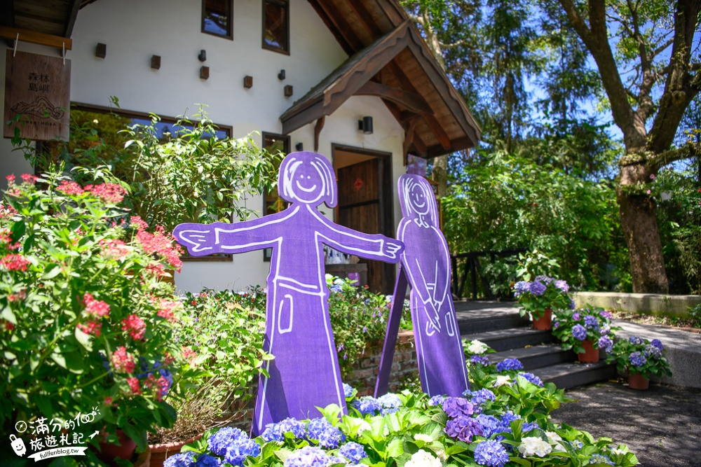
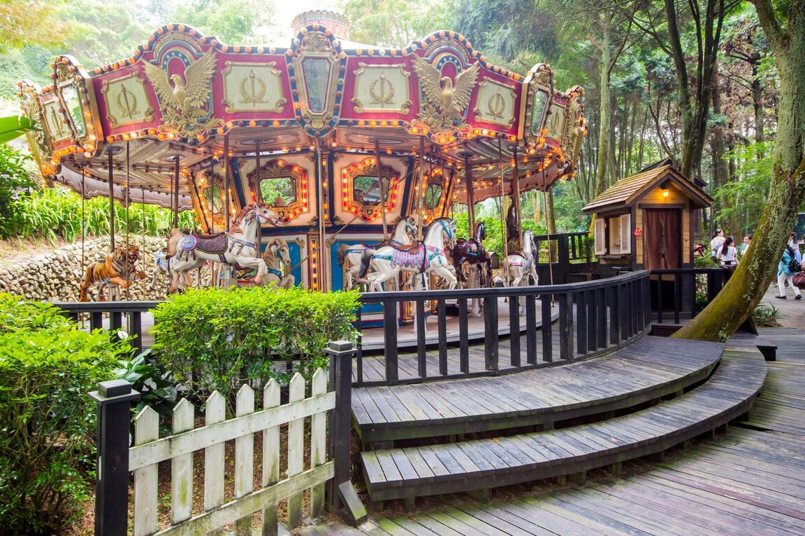
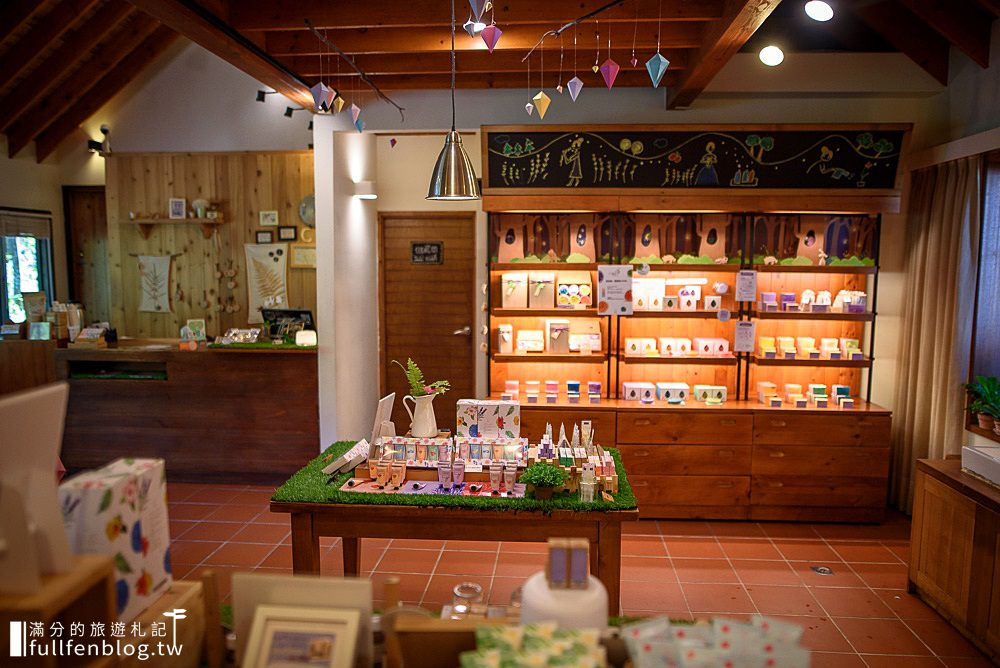

新社薰衣草森林
繡球花季
園區賞繡球花美景順著步道，香草鋪子是旅人會看到的第一棟建築唯美的歐風小屋，充滿童話故事的味道
繡球花季也有新佈景香草鋪子外，規畫了日式神社常見的御手洗旅人可以體驗用勺子洗手，想像自己在日本旅行比較特別 的是，池子裡是一顆又一顆的繡球花色彩繽紛，滿分覺得唯美又好拍

旋轉木馬
旋轉木馬象徵著孩子們的童年與稚氣坐在木馬上，搭配旋律，心情不自覺得感到愉快
森林木馬也很美這一區佈置了滿滿的繡球花，還有一隻古錐小熊，一走進這裡，就整個捨不得離開 旋轉木馬，是最多美圖的一區

香草鋪子
熟悉的森林小屋，還有紫衣女孩迎賓這個造景，幾乎每處薰衣草森林都看的到
香草舖子裡，販售著薰衣草的周邊商品有身體保養類、清潔用品和香皂等等…滿分當天還有試 用一下店裡的洗手乳洗完後，散發著香氣，很是清爽小屋裡，還有不少精美小物唷不僅適合收藏 當紀念，送禮也不錯
